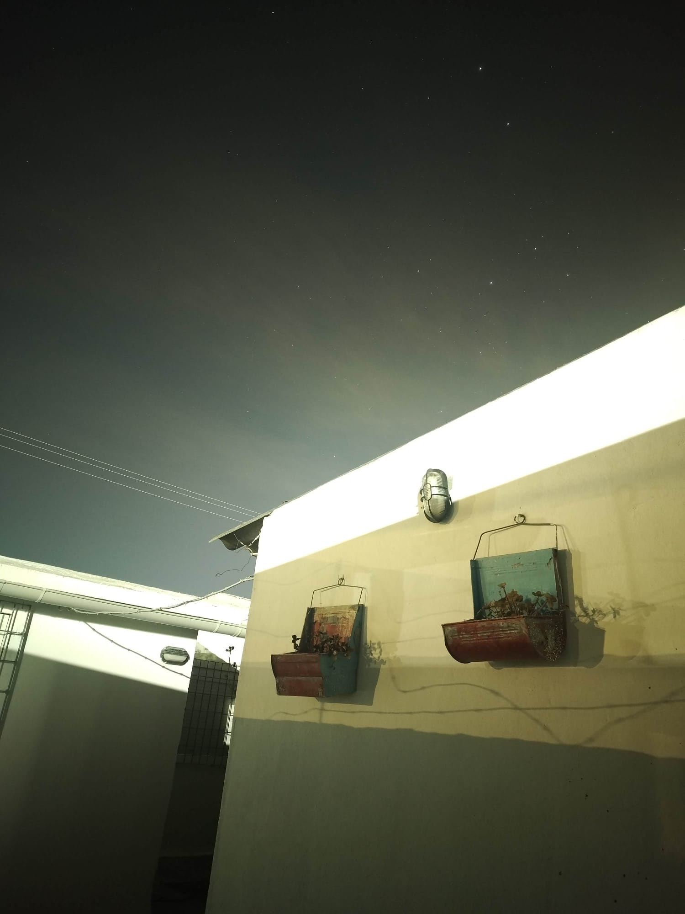
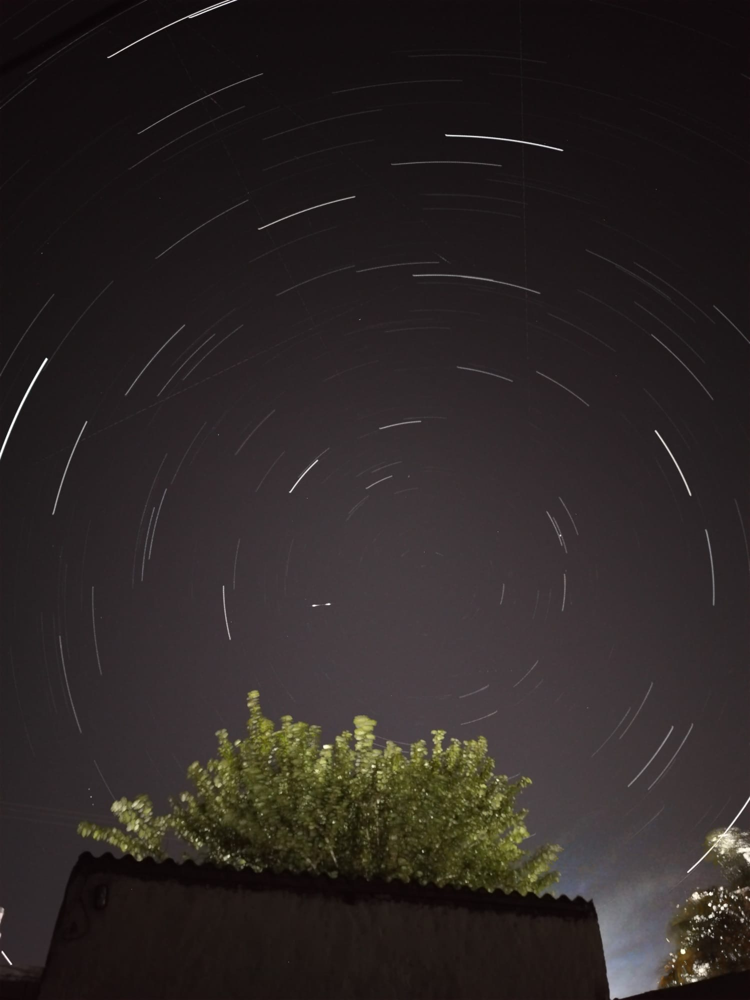

¡Captura el Universo que tienes en tu bolsillo!
¿Sabías que no necesitas telescopios costosos de miles de dólares para fotografiar el cielo nocturno? Con la tecnología que ya tienes en casa (un smartphone común y un trípode sencillo) puedes retratar constelaciones, estrellas y hasta galaxias lejanas. ¡Aprende los secretos de la física de la luz para convertirte en un astrofotógrafo!
Atrapando fotones
El sensor de tu celular tiene millones de "pocitos" llamados píxeles. En la oscuridad del espacio, necesitamos dejar el sensor expuesto más tiempo para capturar la débil luz (fotones) de las estrellas lejanas.
RAW frente a JPG
El formato JPG borra el 90% de la información de luz para ahorrar espacio. Capturar en RAW (DNG) mantiene los datos de luz intactos, permitiéndote "rescatar" estrellas invisibles al editar.
Estabilidad absoluta
Para que las estrellas no salgan como trazos o "fideos", la cámara debe estar inmóvil. Usar un trípode (¡o apoyarlo en una piedra!) y el temporizador evita la vibración del dedo al disparar.
Imágenes para ponernos en acción
Estas capturas fueron obtenidas utilizando un smartphone de gama media. Observa algo de lo que es posible retratar con paciencia y buenas condiciones climáticas.

Retrato de un cielo urbano contaminado lumínicamente.
Siempre que sea posible es mejor alejarse de las luces de las ciudades. Los diferentes municipios en Uruguay cada vez cuidan mejor el diseño de luminarias urbanas para reducir los efectos de la contaminación lumínica. Se aprecia el resplandor de luces intrusivas provenientes de predios vecinos. Aún cuando nos pareció estar en oscuridad, la luz acumulada en el sensor durante 30 segundos dejó esta imagen muy brillante.
Fuente: imagen de autores del contenido Uruguay Educa.
Constelaciones con teléfono
Con un teléfono celular puedes tomar una foto que tarde varios minutos en capturar la luz. Así se puede ver cómo parece moverse el cielo. Las rayitas de luz que se mueven distinto son satélites creados por los humanos. Y esa línea brillante y fuerte en el medio es un meteoro, que es el nombre real de lo que se conoce popularmente como "estrellas fugaces".
Fuente: imagen de autores del contenido Uruguay Educa. Polo celeste sur startrails una hora.Los 4 pasos clave del astrofotógrafo
Sigue esta rutina para asegurar capturas exitosas.
Trípode y estabilidad
Consigue un trípode sencillo o crea un soporte casero con vasos de plástico o latas. Coloca el celular allí para que la toma de 30 segundos no registre ningún temblor.
Enfoque al infinito
El autoenfoque no sirve en la oscuridad total. Cambia a enfoque manual en la cámara y muévelo hasta el icono de la montañita (infinito). ¡Regrésalo un pelín antes del límite para nitidez óptima!
ISO alto y exposición
En tu modo avanzado, ajusta el tiempo de exposición (Shutter Speed) a 32 segundos e incrementa el ISO a 1600 o 3200 para forzar la captación de luz en el sensor.
Huye de la luz de la ciudad
La contaminación lumínica vela la cámara con resplandores amarillos o naranjas. Aléjate un par de horas al campo o aprovecha campamentos liceales para ver estrellas limpiamente.
📱 ¿Cómo activo el modo manual o nocturno en mi celular?
La interfaz de cámara varía según el fabricante. Selecciona la marca de tu dispositivo para ver las instrucciones específicas de los modelos recientes (2024 a 2026). Los nombres de los menús pueden variar levemente según el modelo y la versión del sistema.
Tutorial de astrofotografía de bajo costo
Sigue este genial video elaborado por el canal Astrofotografía y Café. En él se demuestra cómo con un simple Motorola viejito y un trípode improvisado se pueden obtener imágenes profesionales de la Vía Láctea y Andrómeda.
⭐ Agradecimiento especial: Queremos enviar un agradecimiento muy cálido al canal creador por compartir de manera libre este contenido formativo tan valioso para nuestros estudiantes.
Ir a @astrofotografiaycafePon a prueba tu conocimiento
Responde las 5 preguntas del cuestionario de astrofotografía básica para desbloquear tus estrellas de oro.
Pregunta 1 de 5
¡Misión de iniciación completada!
Has demostrado dominar los secretos básicos de cómo funciona la luz y cómo usar la cámara de tu celular para registrar las estrellas de forma directa.
Evidencia de aprendizaje
Astrofotógrafo de secundaria 2026
Puntaje obtenido: 0/5 estrellas
Fecha de obtención: